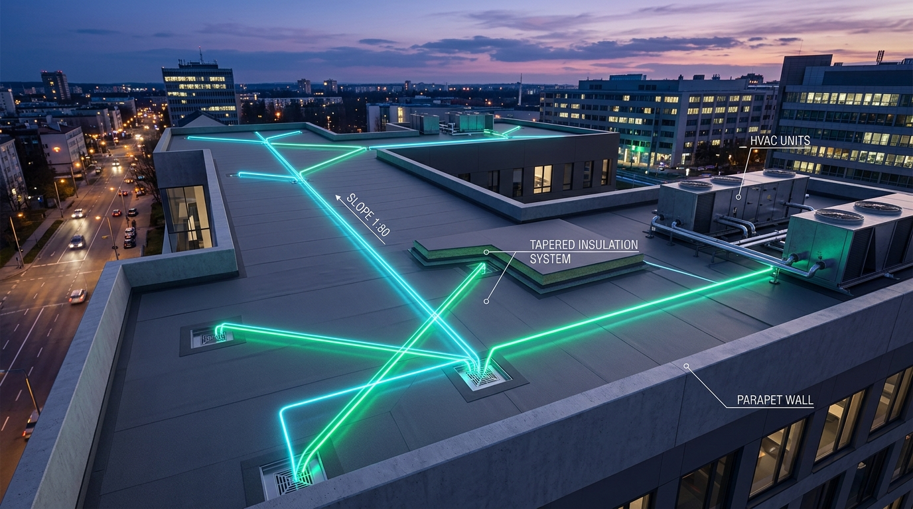

Detects a roof's inner boundary loops (openings, skylights, drain wells), then generates a shape point perpendicular to each rectangular loop's side, resolved to the lowest adjacent elevation within a tolerance.
Manually subdividing opening perimeters, drawing perpendicular guide lines from curbs to drains, calculating slope points.
Detects inner loops, projects perpendicular rays toward drains, and automatically adds shape points for smooth folding.

| Index | Type | Shape | Perimeter (mm) | Selected |
|---|---|---|---|---|
| 1 | Inner | Rectangular | 4,200 | ✓ |
| 2 | Inner | Rectangular | 3,600 | ✓ |
| Use | Shape # | Side | Candidates | Selected point (m) | Distance (mm) | Elevation (mm) |
|---|---|---|---|---|---|---|
| ✓ | 1 | North | 3 | 12.40, 8.90 | 150.0 | 410 |
| ✓ | 1 | South | 4 | 12.40, 5.10 | 150.0 | 380 |
| ✓ | 2 | East | 2 | 18.20, 7.00 | 150.0 | 440 |